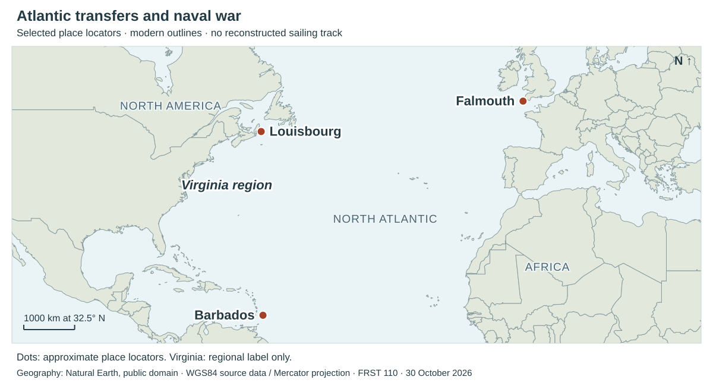
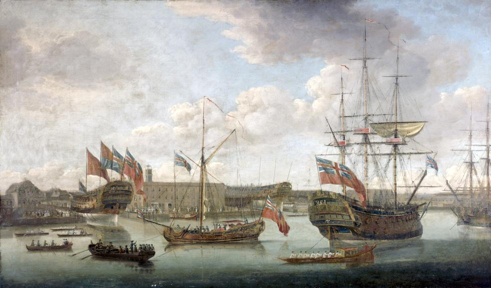
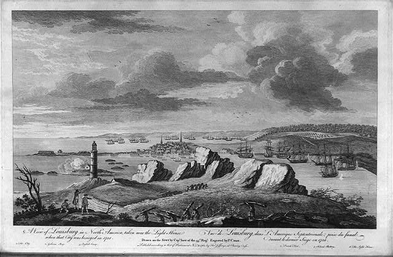

Equiano · Chapters 3–4
Virginia, naval service, learning to read, and the expectation of freedom. The chapters end with a forced departure from Deptford and sale aboard a ship near Gravesend.
Places in chapters III–IV
Map sources and limitsFour views locate selected places in the account: Atlantic transfers, Channel ports, the Mediterranean campaign, and the Thames. Dots locate places, not exact ships or battle positions. Modern outlines provide orientation. No sailing track is reconstructed.

Approximate place locator · Virginia region is a broad label, not a landing point.
North is up. Geography: Natural Earth, public domain. The Thames is a generalized modern river line. Use + / − to zoom; select a dot for its location note.
Place names and geographic limits
- Barbados → Virginia → Falmouth
- The chapter III transfer sequence. The Virginia river, plantation and landing place are unnamed. Falmouth is in Cornwall, England.
- Halifax and Louisbourg
- The fleet calls at Halifax before the 1758 expedition against Louisbourg on Cape Breton Island. Only Louisbourg is marked on the Atlantic overview.
- Guernsey and Belle-Île
- Different islands: Guernsey is in the Channel; Belle-Île is off Brittany. The account includes visits in different years, not one continuous island tour.
- Gibraltar, Barcelona and Toulon
- The Mediterranean entrance, a watering stop and a naval-base/blockade setting. City and harbour locators do not establish precise fleet positions.
- Lagos / “Cape Logas”
- Portuguese coastal context for the battle of August 1759. The Lagos dot is a town locator, not a battle coordinate. It does not mean Lagos in Nigeria.
- Westminster → Deptford → below Gravesend
- Westminster is the earlier London setting. At the chapter IV ending, forced boat transport begins at Deptford; the sale occurs aboard the Charming Sally downstream of Gravesend. The ship’s anchorage is not pinned.
Scope: selected places that clarify the chapters. Incidental references and repeated naval calls are not all plotted. Chapter III · Chapter IV.
Chapter 3 · New names, new knowledge, naval service
The narrative moves from Barbados to Virginia, England, and the British navy. Growing knowledge changes what Equiano can understand and do. It does not give him control over where he is sent or whether he can be sold. Passage anchors below follow the chapter; page numbers vary by edition. Read chapter 3.
Virginia · isolation, the muzzle, the watch
Equiano is among the captives not sold in Barbados and is sent onward to Virginia. The account names neither the river of arrival nor the plantation’s location. Separation from people who speak his language makes this stage especially lonely. In the owner’s house, he sees an enslaved woman restrained by an iron muzzle. He then fears that a watch can report his actions and that a portrait watches him. The adult narrator distinguishes the woman’s actual restraint from the child’s attempts to explain unfamiliar objects.
Pascal’s purchase and the name Gustavus Vassa
Michael Henry Pascal, a Royal Navy lieutenant then commanding the merchant ship Industrious Bee, buys him from Mr. Campbell. On the voyage to England, Pascal imposes the name Gustavus Vassa. Equiano says he initially refuses to answer and receives blows until he submits. He had already been called Michael on the Atlantic slave ship and Jacob in Virginia. Naming here demonstrates someone else’s power over him; the later published title displays both Olaudah Equiano and Gustavus Vassa.
Dick, friendship, and unequal security
Richard Baker, called Dick, becomes his companion, interpreter, and instructor. The narrator praises this friendship while explicitly noting that Dick himself owns enslaved people. Kindness and participation in slavery coexist. The captain’s threats to eat the boys are described retrospectively as jokes; the frightened child takes them literally. The difference between intention and experience matters when one person controls another’s safety. Chapter 3 anticipates Dick’s death; chapter 4 returns to the moment Equiano learns of it.
Falmouth and Guernsey · learning to interpret
Snow, church worship, books, and household life require new explanations. Equiano talks to a book and listens for an answer because he has seen Pascal and Dick reading. Its silence makes literacy a form of knowledge he wants to acquire. At Guernsey, he tries to wash his face to resemble his young white companion Mary. The account records a painful change in how he judges his complexion alongside affectionate treatment by her family. These scenes concern learning and belonging under unequal conditions, not simply a collection of amusing mistakes.
The navy · learning through work and danger
A press-gang’s seizure of sailors introduces another form of coercion. Aboard the Roebuck, Equiano learns shipboard tasks, fires guns, plays with other boys, and begins to want a battle. Voyages take him to places including Holland, Leith, and the Orkneys. Later illness confines him in London: the narrative describes threatened amputation and then smallpox. Changes of ship repeatedly change his companions. When Pascal moves from the Preston, Equiano chooses to follow him and parts from Dick.
Louisbourg · imperial victory and its violence
On the Namur, he joins the expedition against Louisbourg in 1758. The narrated voyage passes Tenerife and Halifax before reaching Cape Breton. His enthusiasm for British officers and victory accompanies descriptions of deaths, burning ships, and an Indigenous man’s scalp. These details place the celebrated capture beside its violence. On the return voyage, confusion about another fleet’s identity nearly leads to disaster. The chapter ends with the Namur grounding near St. Helen’s, refitting at Portsmouth, and Pascal and Equiano going to London.
Chapter 4 · Learning, service, and the claim to freedom
Equiano becomes more confident in English society and at sea. Schooling, baptism, naval service, and trusted relationships encourage his expectation of freedom. The final sale forces him to state that expectation as a claim that Pascal and a new buyer reject. Read chapter 4.
“Almost an Englishman”
The opening attaches this phrase specifically to his reduced fear of danger, then describes a broader wish to acquire English knowledge and manners. Familiarity has replaced his first terror of Europeans. He praises Pascal’s treatment and feels attached to him. These statements describe his understanding at this point in the story; they do not establish that he has become free or enjoys the same protection as other sailors.
School, baptism, and the Thames
The Miss Guerins arrange schooling and support his request for baptism. The narrative dates the ceremony at St. Margaret’s, Westminster, to February 1759 and says he is baptized as Gustavus Vassa. Learning to read and learning Christianity develop together. Nearby, boys push a wherry away as he tries to step into it; he falls into the Thames and is rescued by watermen. When the Namur sails again, naval obligations interrupt the schooling he values.
Gibraltar · the sister and the news of Dick
Someone offers to lead him to his sister. The young woman initially resembles her, but conversation makes clear that she is someone else. Hope of recovering a family relationship is disappointed. He then learns that Dick has died and receives his belongings as a memorial. Increased confidence and mobility have not ended the losses that began with separation.
The Mediterranean and Lagos · work inside a battle
The fleet cruises near the Gulf of Lyons and Toulon, replenishes its water at Barcelona, and returns to Gibraltar. In the fighting off Portugal in August 1759, Equiano carries gunpowder to a gun on the Namur’s middle deck. Torn cartridge containers scatter powder near a burning match; he and his companion use water to reduce the danger. He sees men killed and Pascal wounded but cannot leave his station. The episode makes the labor and risk inside a warship visible, alongside the larger account of British victory.
The Aetna, Belle-Île, and Providence
On the fireship Aetna, he becomes Pascal’s steward and has more time to read and write. The narrative then follows the Belle-Île expedition, a collision with the Lynne, the siege, and further service along the French coast. Equiano interprets narrow escapes as acts of Providence. His interpretation gives accidents and survival religious meaning; the account of what happened and the explanation of why he survived remain distinguishable. His curiosity about artillery and his dangerous attempt to ride away from the fighting also show how desire for knowledge can place him at risk.
Daniel Queen and the expectation of freedom
The captain’s clerk helps with writing and arithmetic. Daniel Queen teaches practical skills and reads the Bible with him, explaining difficult passages. Equiano recognizes parallels with customs he remembers from Africa: new learning also strengthens his account of earlier knowledge. Queen promises further instruction and assures him that he is free. Equiano imagines earning money for education when the ship is paid off. He makes a crucial qualification: Pascal has not promised to free him.
Deptford to below Gravesend · a disputed claim
The narrative dates the Aetna’s arrival at Deptford to 10 December 1762. Pascal abruptly forces Equiano into a boat and takes him downstream. The sale itself occurs aboard the Charming Sally, described as lying “a little below Gravesend.” Its captain, James Doran, declares him his slave. Equiano answers with years of service, withheld wages and prize money, baptism, and what he has heard about the law. These are his grounds for claiming freedom, not a court’s judgment that baptism has legally freed him.
Doran’s complaint that he “talked too much English” turns an acquired ability into an alleged offense. Equiano can now argue his position, but his captors can silence and transport him. His former shipmates offer help; he hides his savings and hopes to escape. The chapter ends with grief and continued captivity, before the next voyage’s outcome.
Water, movement, and control
The sea carries trade, naval forces, and people whose freedom to travel differs sharply. A merchant ship takes Equiano from Virginia to England; warships then carry him through the Atlantic and Mediterranean. Shipboard work brings knowledge and relationships while his destination remains subject to other people’s commands.
Water is also a limited supply and a practical means of survival. Chapter 3 describes a rationed Atlantic passage and drinking water dumped to lighten a grounded ship. Chapter 4 describes taking on water at Barcelona, using water against spilled gunpowder, and escaping drowning in the Thames. At the end, the falling tide helps carry Pascal’s boat from Deptford toward Gravesend. The same river that supported play and everyday movement becomes the means of forced removal. Chapter 4.
The Seven Years’ War and the narrative’s perspective
The Seven Years’ War (1756–1763) connected fighting in Europe with imperial conflicts in North America, the Caribbean, and India. Anglo-French fighting in North America had begun earlier, in 1754. Naval transport, supply, blockades, and attacks on coastal strongholds linked these theaters. Louisbourg’s capture in 1758 belongs to this larger struggle. National Army Museum overview.
Equiano’s own position is specific: he serves on British ships while Pascal claims ownership of him. The narrative often calls the British sailors and soldiers “our” men and admires their victories. It also records coercion, death, and the refusal of his claim to freedom. Skill, loyalty, Christian belonging, and affection can coexist with continued enslavement. Neither admiration nor suffering alone describes the full relationship presented in these chapters.
Places and dates: the maps select named locations for orientation; they are not a complete ship’s log. The map follows the narrated movements rather than assigning an exact date to every stop. The chapter titles and passage anchors provide the main reading references. “Lagos” here names the battle off Portugal in 1759, not the city in present-day Nigeria. Royal Museums Greenwich, Battle of Lagos.
Words in the reading
- Man-of-war
- An armed naval ship.
- Press-gang
- A group sent to seize men for naval service.
- Prize money
- Money distributed from the capture of enemy ships or property.
- Wherry
- A small rowing boat used to carry people, including on the Thames.
- Fireship
- A vessel equipped to be set on fire and used against enemy ships.
- Inured
- Accustomed to something difficult through repeated exposure.
- Providence
- God’s guidance or intervention in events, as understood by the narrator.
Historical images


Science Museum Group Collection / © The Board of Trustees of the Science Museum. Museum record · CC BY-NC-SA 4.0.


Library of Congress, LC-USZ62-2771. Library record and full title. No known restrictions on publication.
Sources and editions
Primary-text quotations and events refer to Volume I, Chapters III–IV. Historical images show their own stated dates and viewpoints. Research checked October 30, 2026.
- Chapter III and Chapter IV · Hanover Historical Texts Project, public-domain transcriptions.
- Complete narrative and front matter · Project Gutenberg.
- Reading and historical-context sources.
- Map geography, coordinates, and uncertainty.
- Historical image records and rights.